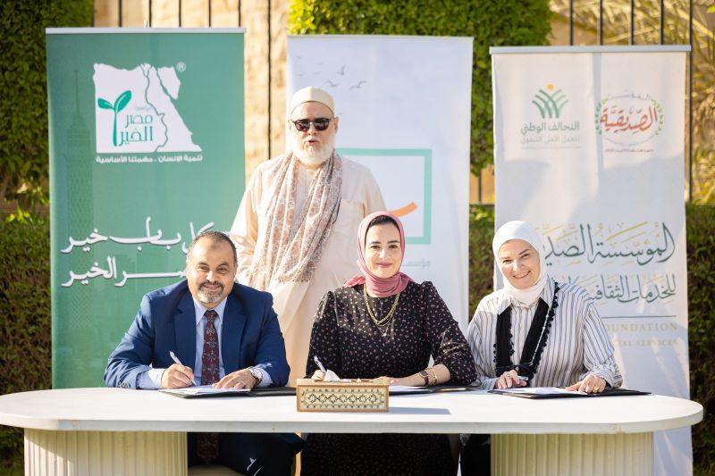
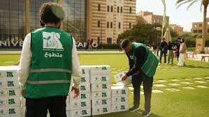
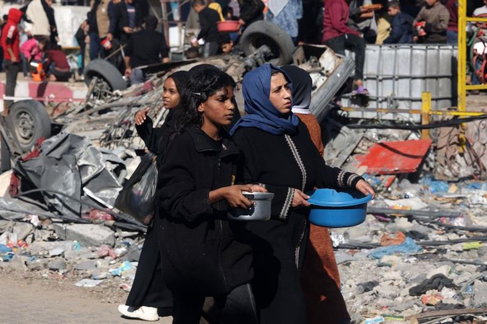
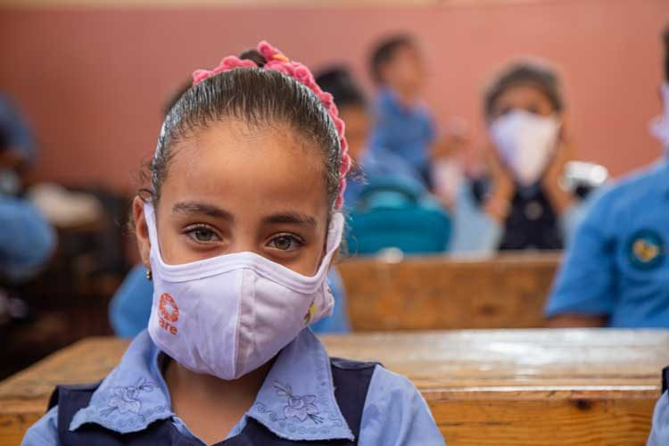

Introduction to Misr El Kheir Foundation |
Founded in 2007, Misr El Kheir Foundation was established with a powerful mission: to improve the quality of life for all Egyptians through sustainable development initiatives. From its early beginnings, the foundation recognized the urgent need to address critical areas such as healthcare, education, and economic empowerment, with a focus on reaching the most vulnerable communities across Egypt. |
 |
Early Years (2007 - 2012) |
In its first five years, Misr El Kheir quickly expanded its reach and impact. With a dedicated team and the support of generous donors, the foundation launched essential programs aimed at reducing poverty and improving living standards. During this period, Misr El Kheir pioneered healthcare outreach programs, providing critical medical services to underserved regions and initiating scholarship programs to support students from low-income families. |
 |
Major Milestones and Achievements |
Over the years, Misr El Kheir achieved several significant milestones that marked its evolution as a leading philanthropic organization in Egypt. In 2010, the foundation launched the 'Microloan Program,' empowering thousands of Egyptians to establish small businesses and attain financial independence. By 2015, Misr El Kheir had expanded its education initiatives, building new schools in rural communities and providing adult education programs to reduce illiteracy rates. These initiatives continue to empower individuals and families across Egypt to break free from the cycle of poverty. |
 |
Responding to National and Global Challenges |
Over the years, Misr El Kheir achieved several significant milestones that marked its evolution as a leading philanthropic organization in Egypt. In 2010, the foundation launched the 'Microloan Program,' empowering thousands of Egyptians to establish small businesses and attain financial independence. By 2015, Misr El Kheir had expanded its education initiatives, building new schools in rural communities and providing adult education programs to reduce illiteracy rates. These initiatives continue to empower individuals and families across Egypt to break free from the cycle of poverty. |
 |